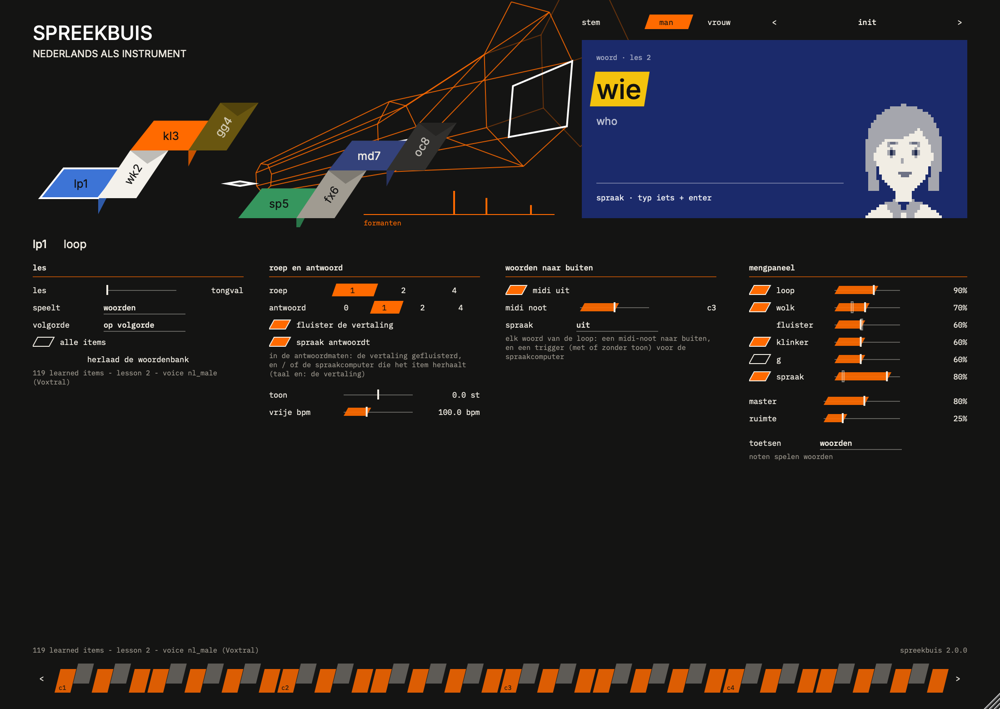
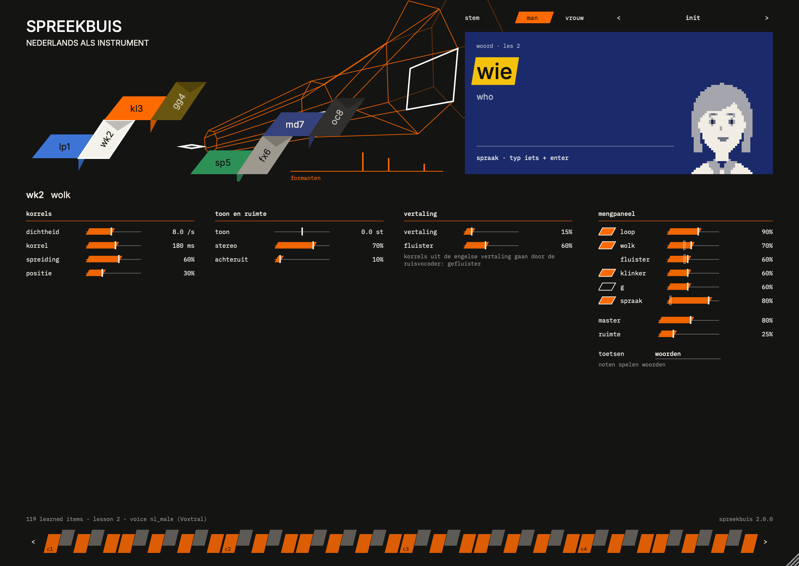
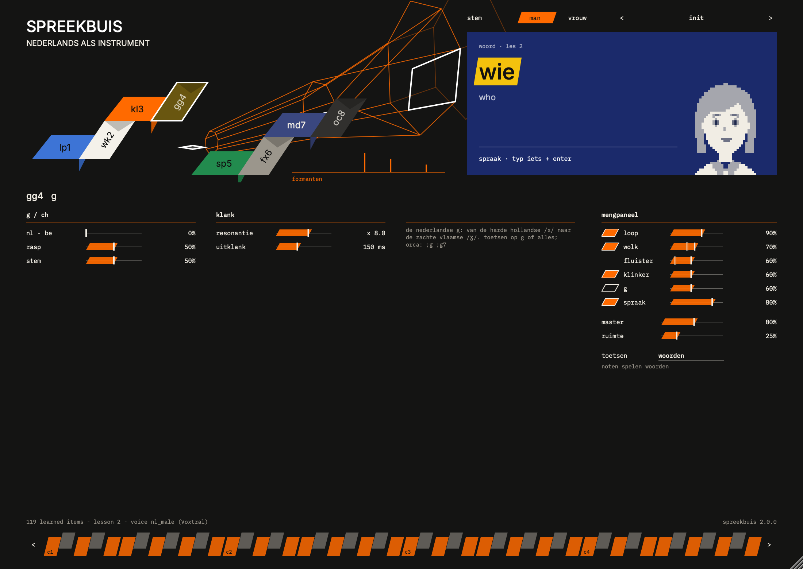
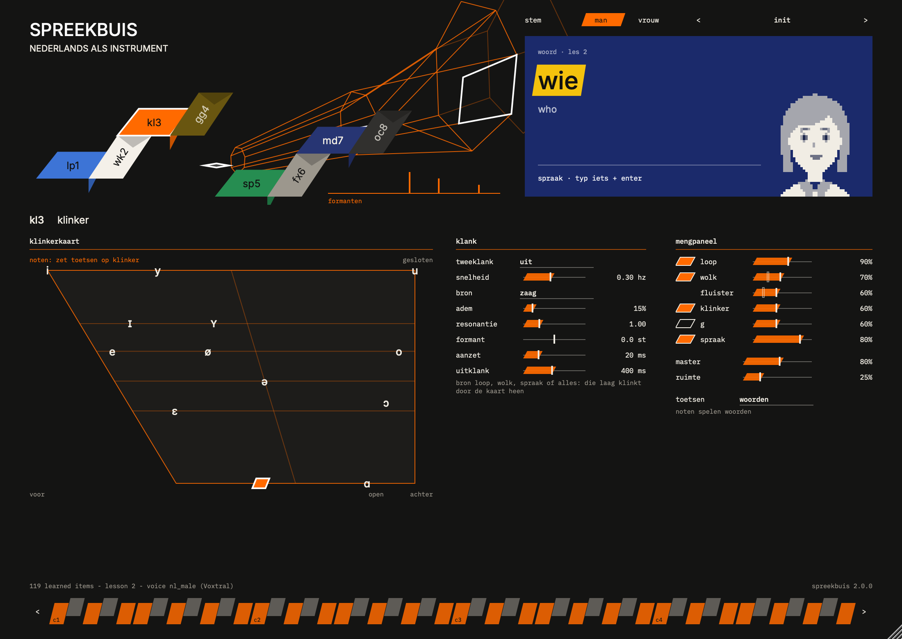
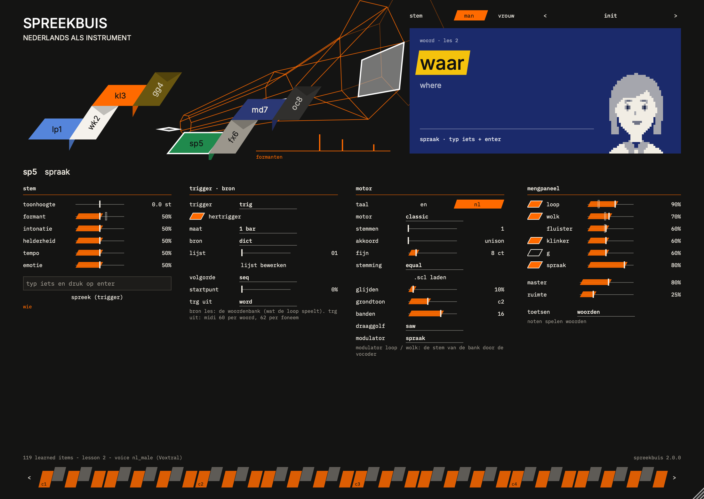
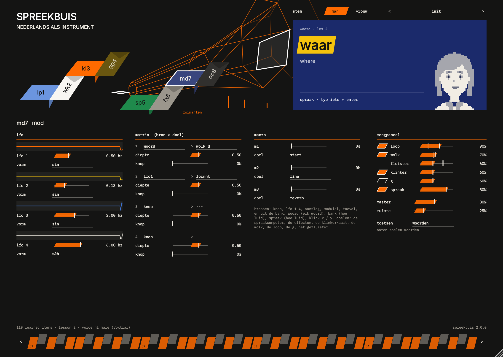

spreekbuis
Nederlands als instrument — Dutch as an instrument, with a speech computer inside.
VST3 · VST2 · AU · Standalone · manual v2.0
VST3 · VST2 · AU · Standalone · manual v2.0

SPREEKBUIS = SPEAKING TUBECOMPANION TO TONGVAL

Spreekbuis plays the Dutch you are learning in Tongval as sound material. Every word, sentence and dialogue line from the course is recorded with a real Dutch voice, and the plug-in turns them into loops, grain clouds, vowel drones and throat noise. Inside it lives a speech computer: an 80s-style formant synthesizer that says any text in Dutch or English, sings it in chords or runs it through a vocoder.
Until version 1.0 these were two plug-ins, Spreekbuis and Spraakmaker. Since 2.0 they are one instrument: the speech computer is a layer of Spreekbuis like the others, and the layers share one voice switch, one clock, one modulation matrix, one mixer and one set of effects, and they feed each other (section 14).
| Page | Layer | What it does |
|---|---|---|
| lp1 | Loop | The current lesson as tempo-synced call and response, with karaoke text and MIDI out. |
| wk2 | Wolk | Granular cloud of the words you know, with whispered English translations. |
| kl3 | Klinker | Formant filter steered by the Dutch vowel chart; it can shape the other layers. |
| gg4 | G | The Dutch g/ch as a playable, pitched noise. |
| sp5 | Spraak | The speech computer: text to speech, CLASSIC / VOCODER / VOSINGER, microtonal tunings. |
| fx6 | Effects | Bitcrush, width, ping-pong echo and reverb, on the speech computer or on everything. |
| md7 | Modulation | Four LFOs, four matrix slots and three macros that reach every layer. |
| oc8 | Orca | Words, vowels, the g and the speech computer from Orca over UDP. |
There is no speech recognition: Spreekbuis only speaks, it doesn't listen. The speech computer is an homage after the Phonemer by moddict (a Eurorack module); it is not affiliated with moddict and uses none of their names or marks.
The window follows the design of the faltung suite, in Spreekbuis's own colours: flat fields, thin lines, lowercase type, skewed sliders and switches.
| Area | What it shows / does |
|---|---|
| Picture | A wireframe speaking tube that breathes with the sound, the formants of the vowel chart (lines) and of the speech computer (hollow marks), and eight folded strips: the pages. Click a strip to open its page; the open one is outlined. |
| Top right | stem man / vrouw (one switch for the recorded words, the vowel chart and the speech computer) and the preset box (< and > step, the name opens the menu). |
| Navy field | What is being said: the item the loop plays (kind and lesson, the Dutch with the current word highlighted in yellow, the English underneath), or the speech computer's word, with Sanne, the pixel tutor from Tongval, whose mouth follows the phonemes. |
| Page | The controls of the open page, in three columns. |
| Mixer | Always visible on the right: an on/off switch and a level for every layer, master, ruimte (the room) and toetsen (what notes play). The hollow tick on a slider shows where modulation has moved it. |
| Bottom | The bank's status, the version and a keyboard you can click or play from the computer keys. |


All course items (words, sentences, dialogue lines and Lesson 0's sounds) are recorded as audio, with the timing of every word, in the voice bank folder (see section 12). English glosses are recorded too, for the whisper layer. The bank is rendered on your machine by tools/render.sh with the system's Dutch text-to-speech (macOS, Windows and Linux; see section 12).
No bank yet? Spreekbuis then speaks every item with its built-in voice: the Klatt formant synthesizer that is also the speech computer (made once, in voice-builtin/, the first time it loads; this takes a short while and the karaoke says so). It is a robot voice, intelligible rather than natural: render a real voice when you can.
At load, Spreekbuis reads Tongval's progress file and builds a bank of everything you have learned (words and sentences you've finished in lessons), plus the lesson you're currently on. alle items ignores your progress and plays everything. After a study session in Tongval, press herlaad de woordenbank to pick up the new words.
Every item Spreekbuis plays is logged in plays.json. The next time you open Tongval, words you've played show a ♪ count in the lesson word list and the dictionary, and you get listening XP: 1 XP per 5 plays, at most 30 XP a day. Hearing a word isn't the same as recalling it, so plays don't change your review schedule.
The loop plays one item per call, then leaves an answer gap for you to repeat it, locked to the host tempo. While the DAW is stopped (or in the standalone app) it runs at its own tempo, Vrije BPM. During the answer bars the English translation is whispered, if enabled.
| Control | Range | What it does |
|---|---|---|
| LOOP button | on/off | Turns the layer on (default on). |
| Les | current, 1–36 | Which lesson to loop. current (Tongval) follows your progress. |
| Speelt | Words · Sentences · Dialog · All | Which kind of items to play. |
| Volgorde | In order · Shuffle | Order of items. |
| Roep (maten) | 1 · 2 · 4 | Call length in bars: how long each item gets. |
| Antwoord (maten) | 0 · 1 · 2 · 4 | Answer gap in bars. 0 = continuous, no gaps. |
| Fluister vertaling | on/off | Whisper the English during the answer bars. |
| MIDI uit | on/off | Send a MIDI note at every word onset (VST3, VST2). |
| Niveau | 0–1.5 | Loop level. |
| Toon | ±12 st | Pitch of the voice. |
| Vrije BPM | 50–200 | Tempo when the host isn't playing. |
| Spraak antwoordt | on/off | In the answer bars the speech computer says the item the loop just played (in Dutch; with taal en its English translation). Needs the spraak layer on. |
| Spraak (woorden naar buiten) | uit · trigger · trigger + toon | Every word of the loop triggers the speech computer; + toon also gives it a note of the scale the MIDI out uses. |
| MIDI noot | 24–96 | Note number of the MIDI out notes. |
A granular cloud made from the words in your bank: short slices of words scattered in time, pitch and stereo. Some grains can be English translations turned into whispers by a 12-band noise vocoder.
| Control | Range | What it does |
|---|---|---|
| Niveau | 0–1.5 | Cloud level. |
| Dichtheid | 0–80 | Grains per second. 0 = only grains you trigger with keys or Orca. |
| Korrel ms | 15–900 ms | Grain length. Long grains play whole words; short ones become texture. |
| Spreiding | 0–1 | Scatter: how much the start position wanders. |
| Positie | 0–1 | Where in each word grains start. |
| Toon | ±24 st | Grain pitch (also used for words played from keys and Orca). |
| Stereo | 0–1 | Stereo spread. |
| Achteruit | 0–1 | Share of grains played backwards. |
| Vertaling | 0–1 | Share of grains that are English translations. |
| Fluister | 0–1.5 | Level of the whispered translations (also used by the loop). |

A formant filter whose XY pad is the Dutch vowel chart, the same one linguists use: left–right is front–back of the tongue, top–bottom is closed–open mouth. Drag the dot to y (the uu of muur) or ø (the eu of neus) and you hear exactly the vowels Lesson 0 teaches, from a saw wave, noise or your own audio.
| Chart symbol | Dutch spelling | Example |
|---|---|---|
| i · y · u | ie · uu · oe | niet · muur · boek |
| ɪ · ʏ | i · u | vis · bus |
| e · ø · o | ee · eu · oo | twee · neus · boot |
| ə | e (weak) | de · lopen |
| ɛ · ɔ | e · o | bed · pot |
| a · ɑ | aa · a | maan · man |
| Control | Range | What it does |
|---|---|---|
| XY pad | front–back × close–open | The vowel. Automatable as Front-back and Close-open. |
| Tweeklank | Off · ɛi · œy · ʌu | Diphthong glide: the dot travels the path of ij/ei, ui or ou/au, as an LFO. |
| Bron | zaag · ruis · ingang · zaag + ingang · loop · wolk · loop + wolk · spraak · alles | Sound source. ingang uses the input bus, so Spreekbuis works as a vowel effect. loop, wolk, spraak or alles: that layer is heard through the chart instead of dry. |
| Niveau | 0–1.5 | Level. |
| Snelheid | 0.02–8 Hz | Glide speed. |
| Adem | 0–1 | Breath noise mixed into the source. |
| Resonantie | 0.3–3 | Formant sharpness. |
| Formant | ±12 st | Shifts all formants: smaller or bigger "mouth". |
| Aanzet / Uitklank | attack / release | Envelope for notes played from keys. |
The throaty Dutch g/ch (as in goed, acht) as an instrument: filtered noise with a pitched resonance. Turn NL – BE from the hard, rasping Holland g to the soft, voiced Flemish g.
| Control | Range | What it does |
|---|---|---|
| Niveau | 0–1.5 | Level. |
| NL – BE | 0–1 | Holland /x/ (left) to Flemish /ɣ/ (right). |
| Rasp | 0–1 | Uvular scrape, the "throat-clearing" part. |
| Stem | 0–1 | Voicing: adds a buzz under the friction. |
| Resonantie × | 1–24 | Which harmonic of the played note the resonance sits on. |
| Uitklank | 0.01–2 s | Release. |

A speech computer: every word is synthesised phoneme by phoneme by a Klatt-style formant voice, so you can bend pitch, mouth size, speed, intonation and emotion, play it as a chord, run it through a vocoder or chop it into single phonemes. Switch it on with spraak in the mixer. Typing in the field and pressing enter, the spreek button and Orca's ;= and ;! make it speak even while the layer is off.
| Control | Range | What it does |
|---|---|---|
| toonhoogte | ±24 st | Base speaking pitch. |
| formant | 0–1 | Size of the mouth: low = big, dark voice; high = small, child-like. Stem vrouw raises it too. |
| intonatie | 0–1 | How much the pitch melody moves: 0 = flat robot monotone, 1 = exaggerated. |
| helderheid | 0–1 | Spectral tilt of the voice source: muffled to buzzy. |
| tempo | 0–1 | Speaking rate. |
| emotie | 0–1 | One macro over pitch range, jitter, breathiness and tempo variation: calm and whispery at 0, agitated at 1. |
| Control | Options | What it does |
|---|---|---|
| trigger | auto · trig · gate · ph.trg · ph.gate | auto: speaks every maat on its own. trig: each note (or trigger) speaks the next item. gate: speaks while the note is held. ph.trg: each trigger steps one phoneme. ph.gate: each note holds one phoneme while the key is down. |
| hertrigger | on/off | On: a new trigger cuts the current word. Off: the word finishes first. |
| maat | free · 1/16 … 4 bar | How often auto speaks, in sync with the host (or the free-run tempo). |
| bron | dict · alpha · keyb · markov · lettr · list · les | dict: dictionary words (English: CMUdict, 126,000 words; Dutch: the ~1,300 course words). alpha: the alphabet. keyb: what you type. markov: generated phrases (Alice in Wonderland; Tongval's sentences and stories). lettr: sound poetry. list: one of 99 word lists. les: the word bank, what the loop plays (its speelt setting). |
| lijst | 1–99 | The list for list; lijst bewerken edits it. |
| volgorde | seq · rand | List order. |
| startpunt | 0–1 | Where in the word playback begins. |
| trg uit | word · phon · both · off | MIDI out: note 60 at every word, 62 at every phoneme. |
| Control | Options | What it does |
|---|---|---|
| taal | en · nl | Language for pronunciation and for dict, alpha, markov and les (nl: the Dutch item, en: its English translation). |
| motor | classic · vocoder · vosinger | classic: the formant voice on its own (up to 4 voices). vocoder: an 8–20 band vocoder; its modulator is the speech, the bank's voice (modulator) or input 2, its carrier input 1 or the internal draaggolf. vosinger: the speech sung onto MIDI chords. |
| stemmen · akkoord · fijn | 1–4 · 10 chords · 0–50 ct | Voices, chord memory (unison, octave, fifth, major, minor, sus4, maj7, min7, dim, cluster) and detune. |
| stemming | equal · just · pythag · meantn · 24-tet · user | Tuning; .scl laden loads a Scala file for user. |
| glijden · grondtoon | 0–1 · c0–c5 | Portamento; the pitch when no note is held (an octave up for stem vrouw). |
| banden · draaggolf | 8–20 · saw, pulse, noise | Vocoder bands and internal carrier. |
| modulator | spraak · loop · wolk · loop + wolk | What the vocoder listens to: the speech computer, or the recorded voice of the bank, which is then heard only through the vocoder. |
99 lists are plain text files, one entry per line, in lists/ in the data folder (list01.txt … list99.txt). Lists 1–6 come filled (Dutch greetings, numbers, studio words, sentences; English lines and numbers). Lists written by Spraakmaker 1.0 are copied over the first time.
| Control | Range | What it does |
|---|---|---|
| bits · downsample | 4–16 · 1–16 | Bit depth and sample-rate reduction. |
| breedte | 0–1 | Stereo width. |
| echo tijd · terug · mix | 1/16 … 1/2 · 0–0.9 · 0–1 | Ping-pong echo, synced to the host. |
| galm grootte · mix | 0–1 | Reverb. |
| bewerkt | spraak · alles | spraak: only the speech computer goes through the effects (as in Spraakmaker 1.0). alles: every layer does. |
| niveau | 0–1 | The speech computer's level (also in the mixer). |
Ruimte in the mixer is a separate room reverb after everything (Spreekbuis 1.0's space).

Four LFOs (0.01–20 Hz; sin, tri, saw, sqr, s&h), four matrix slots (source → destination, depth −1…+1, each with its own automatable knop) and three macros m1–m3 with their own destinations.
| What there is | |
|---|---|
| Sources | knop · lfo1–4 · vel (velocity) · modwh (mod wheel) · rand (new per trigger) · woord (a pulse at every word the bank says) · bank (how loud the loop and cloud are) · spraak (how loud the speech computer is) · klink x / y (where the vowel chart is) |
| Destinations | pitch · formnt · inton · bright · speed · emotn · start · fine · crush · delay · reverb · width · klink x / y · wolk d / p / t (cloud density, position, pitch) · loop t (loop pitch) · g nl-be · fluist (whisper level) |
Spreekbuis listens for UDP messages on 127.0.0.1:49162 (change the port on the oc8 page). Orca's ; operator sends whatever text follows it when banged, so you can sequence Dutch from an Orca grid. The panel shows whether the port is connected.
| Message | Effect |
|---|---|
;fiets | Speaks the word fiets, if it's in your bank. |
;g | Fires the g generator. |
;g7 | Fires the g, pitched up 7 semitones (base-36 digit: 0–9, a–z). |
;vui | Plays the vowel pad on that vowel. Names: i ie y uu u oe e ee eu o oo a aa ij ei ui ou au uh. |
;=hallo_jij | The speech computer says hallo jij (an underscore is a space), even with its layer off. |
;! | Triggers the speech computer. |
;1a | Anything else is read as a base-36 number and plays that item from your bank. |
In Orca, set the UDP port to 49162 (or run Orca's UDP output to that port), write e.g. ;fiets next to a clock, and every bang says the word.
| Connection | Where | What happens |
|---|---|---|
| One voice | stem man / vrouw | Chooses the recorded bank, the vowel chart's formants and pitch, and the speech computer's mouth and root, together. |
| One clock | — | The host's transport, or the free-run bpm: the loop's bars, auto's maat and the echo times all follow it. |
| The computer answers | lp1 · spraak antwoordt | In the answer bars the speech computer repeats the loop's item (or says its translation in English). |
| Words trigger phonemes | lp1 · woorden naar buiten · spraak | Every word onset of the loop triggers the speech computer, optionally with a note. |
| The computer reads the bank | sp5 · bron les | The speech computer speaks the lesson the loop plays. |
| The bank through the vocoder | sp5 · modulator | The recorded voice becomes the vocoder's modulator: vosinger sings the lesson in chords. |
| Everything through the vowel chart | kl3 · bron | loop, wolk, spraak or alles heard through the chart. |
| One effects rack | fx6 · bewerkt | The speech computer's crush, width, echo and reverb on every layer. |
| One matrix | md7 | Words, loudness and the chart as sources; every layer as a destination. |
| One keyboard | mixer · toetsen | woorden · klinker · g · woorden + klinker · alles · spraak. |
| Toetsen | MIDI notes play… |
|---|---|
| woorden | An item from your bank (the note number picks the item). |
| klinker | The vowel chart at that pitch. |
| g | The g at that pitch. |
| woorden + klinker | Both. |
| alles | Words, vowel chart, g and the speech computer together. |
| spraak | The speech computer only (its trigger modes, pitch and chords). |
The preset menu has init, the nine presets of Spreekbuis 1.0 (woordenbank), the twenty of Spraakmaker 1.0 (spraakcomputer) and seven that use both (samen): Les met echo, Echo in het Engels, Bankkoor, Woorden sturen fonemen, Spraak door de klinkerkaart, Wolk volgt de stem, Alles door de fx. bewaar als… saves the whole instrument as a file in presets/ in the data folder; they appear under eigen presets.
| What | Where |
|---|---|
| Plug-ins (macOS) | ~/Library/Audio/Plug-Ins/VST3/Spreekbuis.vst3, …/VST/Spreekbuis.vst, …/Components/Spreekbuis.component, app in /Applications |
| Plug-ins (Windows) | C:\Program Files\Common Files\VST3\Spreekbuis.vst3, Spreekbuis.exe anywhere |
| Plug-ins (Linux) | ~/.vst3/Spreekbuis.vst3, Spreekbuis standalone anywhere |
| Data folder | ~/Library/Application Support/Spreekbuis/ (macOS), %APPDATA%\Spreekbuis\ (Windows), ~/.config/Spreekbuis/ (Linux) |
| Voice bank | voice/, voice-female/ in the data folder (about 300 MB each); voice-builtin/ for the built-in voice; piper/, piper-voices/ for the Piper install; voxtral/, hf/ for Voxtral |
| Presets, word lists | presets/, lists/ in the data folder |
| Play log | plays.json in the data folder |
| Tongval progress (read) | ~/Library/Application Support/Tongval/progress.json (macOS) |
| Source | github.com/femifleming/spreek |
Voxtral (Apple Silicon Macs, best): python3 tools/render.py --setup-voxtral once makes a venv with mlx-audio and fetches Voxtral-4B-TTS (Mistral's 2026 speech language model with native Dutch voices nl_male / nl_female, 24 kHz; mlx-community/Voxtral-4B-TTS-2603-mlx-4bit, ~2.5 GB) into the data folder; an existing install (the Tongval venv, VOXTRAL_PYTHON, HF_HOME) is reused. It renders at about real time, so both banks take about an hour; the English glosses come from Piper.
Piper (any OS): python3 tools/render.py --setup-piper once installs Piper (a venv with piper-tts) and downloads the voices nl_NL-pim-medium (the man), nl_BE-nathalie-medium (the woman) and en_US-lessac-medium (the English glosses) from the rhasspy/piper-voices Hugging Face repo into the data folder (~200 MB). From then on render.sh prefers Piper over the system voices; an existing Piper (the Tongval venv on this Mac, PIPER_PYTHON, PIPER_VOICES, a piper binary) is reused.
macOS: tools/render.sh records every item with the best installed Dutch voice (Premium, then Enhanced, then the compact one) and exact word onsets. To upgrade the voice: System Settings → Accessibility → Spoken Content → System voice → Manage Voices → Dutch → download Xander (Enhanced) or Claire (Premium). Then run render.sh --force and press herlaad de woordenbank. --female renders the woman's bank (stem vrouw), --stories adds the Tongval stories.
Windows: python tools\render.py uses the Windows voices (Settings → Time & language → Speech → Manage voices → add Dutch). Linux: the same script uses piper (set PIPER_MODEL to a Dutch .onnx model) or espeak-ng -v nl. On these platforms word onsets are estimated from the audio. Whatever the engine, every clip is levelled to the same speech loudness (−16 dBFS, peaks capped), so the balance between the words, the whispered translations and the vowel pad is the same with every voice; render.py --normalize re-levels an existing bank.